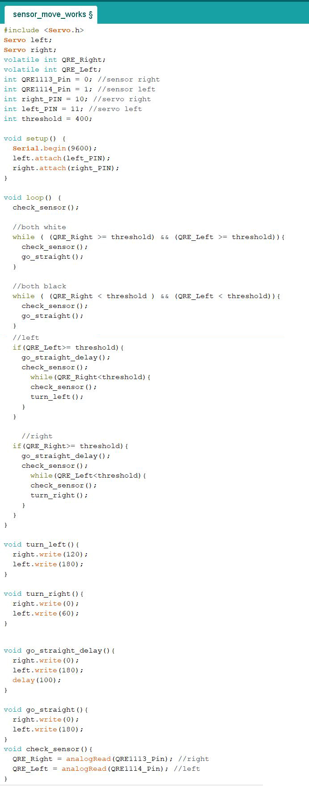

Goals
• To have the robot adjust as it traverses a straight line. • To have the robot traverse the grid in a figure eight.
Line Detection
To ensure our robot could travel in a straight line, we added QRE113 IR line sensors. Before proceeding to writing the code, we tested the sensors and observed the values it outputted depending on the surface the sensors covers. Using this method, we determined the threshold value we wanted to use to differentiate between black and white surfaces.
We set up the sensors such that they have some clearance from the groun and such that the sensors stradle the white lines that we want the robot to follow. This way, the sensors could detect either the white line’s reflected intensity or the black maze’s intensity. We coded the robot to continue its forward trajectories as long as both sensors detected black (assuming the robot was placed directly above the white line to begin with). As soon as one detected white, we would have the appropriate wheel rotate to readjust its course.
The code for these adjustments are shown in the image below:
Our end solution for the straight line adjustment is to adjust the robot under these conditions:
• If both sensors detect white or both detect black, we programmed the robot to go straight. • If the left sensor detects black and the right white, we had the robot adjust right until both detect the same color again. • If the left sensor detects white and the right black, we had the robot adjust right until both detect the same color again.Figure Eight